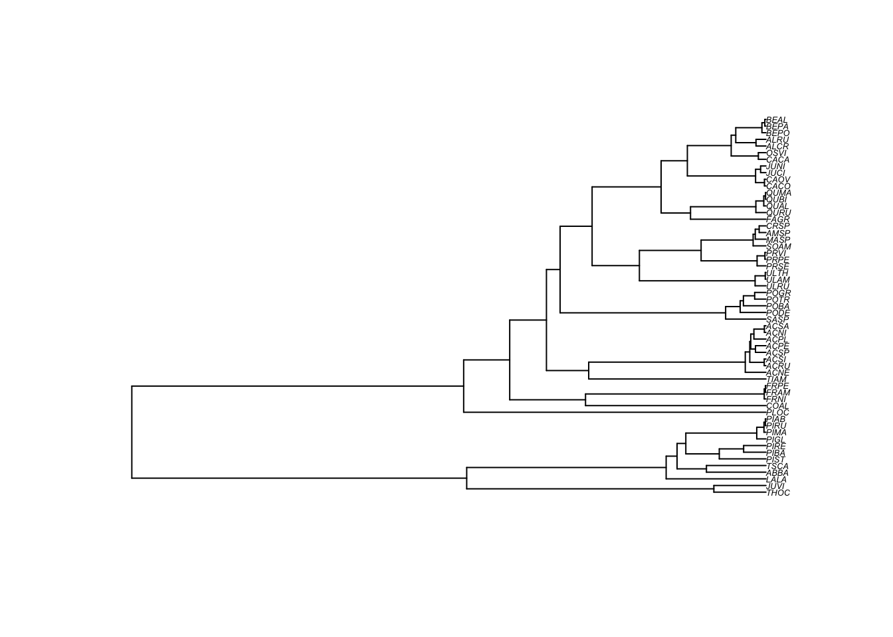

4 The linear regression model
4.1 Theory
The linear model has the following form:
\[\textbf{y} = \alpha + \beta \textbf{x} + \textbf{e}\]
\(\textbf{y}\) is the response (or dependent) variable, \(\textbf{x}\) is the explanatory (or independent) variable, and \(\textbf{e}\) represent the residuals or in other words the variation not explained by the model. For a simple linear regression model, this represents the distance between the observations (i.e., the real data) and the regression line (i.e., the prediction of the model) along the \(y\) axis. The parameters \(\alpha\) represents the intercept, which is the \(y\) value where the regression line crosses the \(y\) axis, whereas the parameter \(\beta\) represent the slope of the line. In practice, you take a sample of size \(N\) and you get estimates \(\hat{\alpha}\) and \(\hat{\beta}\) for the intercept and the slope, respectively. When the linear regression is fitted using ordinary least squares (OLS), the residuals \(\textbf{e}\) are assumed to be normally distributed with an expectation \(0\) and variance \(\sigma^2\). In mathematical terms, \(\textbf{e} \sim N(0,\sigma^2)\).
Obtaining reliable estimates with a linear regression implies that the data meets several assumptions, amongst which are normality, homogeneity, fixed \(X\), independence, and correct model specification. We won’t review all these here, but we will focus on one that is often violated when the data are phylogenetically structured, which is independence. This assumption is important as a lack of independence invalidates important tests such as the F-test and the t-test.
You get a violation of independence when the \(\textbf{y}_i\) value at \(\textbf{x}_i\) is influenced by other \(\textbf{x}_i\). Obviously, this can happen with phylogenetically structured data as a response variable is be more likely to react similarly in closely related species because they share many characters by decent. In other words, the \(y\) value for a species in not completely independent from the \(y\) value of a closely related species: their \(y\) are correlated. We’ll illustrate this in an example below.
4.2 Practice
To provide pratical examples in this workshop, we will use a dataset of tree functional traits from the province of Quebec (Paquette, Joly, and Messier 2015). The dataset consists in a number of plant functional traits and in a molecular phylogeny built using the plant barcode markers rbcL and matK. The dataset you need to run the examples are already in the /data/ folder of the github repository. However, you can also download them by clicking on the links below.
Before analysing the data, we will start by opening the data and the phylogenetic tree and clean them to keep only the species present in both the tree and the trait table. This is necessary because some additional species were included in the phylogenetic tree analysis.
require(ape)
# Open the documents; it assumes that you are in the main directory of the workshop folder
seedplantstree <- read.nexus("./data/seedplants.tre")
seedplantsdata <- read.csv2("./data/seedplants.csv")
# Remove species for which we don't have complete data
seedplantsdata <- na.omit(seedplantsdata)
# Remove species in the tree that are not in the data matrix
species.to.exclude <- seedplantstree$tip.label[!(seedplantstree$tip.label %in% seedplantsdata$Code)]
seedplantstree <- drop.tip(seedplantstree,species.to.exclude)
# Remove unnecessary object
rm(species.to.exclude)
# Order the tree to make it nicer when plotting
seedplantstree <- ladderize(seedplantstree, right = FALSE)
# Now let's look at the tree
plot(seedplantstree,cex=0.4)
Now, we can have a look at the data, and then order the plant trait to be in the same order as the species in the tree.
## Code Species.name Occurrence maxH Wd Sm Shade N
## 1 ABBA Abies balsamea 7759 25 0.34 7.6 5.0 1.66
## 2 ACNE Acer negundo 0 20 0.44 34.0 3.5 2.50
## 3 ACNI Acer nigrum 1 30 0.52 65.0 3.0 1.83
## 4 ACPE Acer pensylvanicum 665 10 0.44 41.0 3.5 2.22
## 5 ACPL Acer platanoides 0 15 0.51 172.0 4.2 1.99
## 6 ACRU Acer rubrum 3669 25 0.49 20.0 3.4 1.91# Name the rows of the data.frame with the species codes used as tree labels
rownames(seedplantsdata) <- seedplantsdata$Code
# Order the data in the same order as the tip.label of the tree. In the present
# example, this was already the case, but it is an important step for
# any analysis.
seedplantsdata <- seedplantsdata[seedplantstree$tip.label,]Now that the data is ready, let’s fit a linear model and try to explain shade tolerance (Shade) of trees using wood density (Wd). In R, a very simple way to do a regression is to use the function ‘lm’, which stands for linear model. To fit a linear model, you need to tell the lm function which variable is the response variable and which one is the explanatory variable. This is done using formulas in the form Shade ~ Wd. The variable at the left of the tilde (‘~’) is the response variable (Shade) whereas the explanatory variale (1 or more) are at the right of the tilde.
# Fit a linear model using Ordinary Least Squares (OLS)
shade.lm <- lm(Shade ~ Wd, data = seedplantsdata)
# Print the results
summary(shade.lm)##
## Call:
## lm(formula = Shade ~ Wd, data = seedplantsdata)
##
## Residuals:
## Min 1Q Median 3Q Max
## -1.87120 -1.02501 0.05628 0.70132 2.38261
##
## Coefficients:
## Estimate Std. Error t value Pr(>|t|)
## (Intercept) 2.0010 0.7501 2.668 0.010 *
## Wd 1.8130 1.5676 1.157 0.252
## ---
## Signif. codes: 0 '***' 0.001 '**' 0.01 '*' 0.05 '.' 0.1 ' ' 1
##
## Residual standard error: 1.146 on 55 degrees of freedom
## Multiple R-squared: 0.02374, Adjusted R-squared: 0.005992
## F-statistic: 1.338 on 1 and 55 DF, p-value: 0.2525You can see that the slope estimate (here the parameter Wd) is 1.81 and that is not significant (\(p\)=0.252). The standard descriptive plots obtained with plot(shade.lm) show that there is slightly greater variation in the residuals for low fitted values, but these are not extreme. However, another way that the assumption of independence can be violated is if the residuals are phylogenetically correlated. One way to test this is to plot the residuals at the tips of the phylogeny. Let’s see what this gives.
# Extract the residuals
shade.res <- residuals(shade.lm)
#
# Plot the residuals beside the phylogeny
# The following command changes the graphical parameters for nicer tree output
op <- par(mar=c(1,1,1,1))
# Vector of colors for the tree plotting
cols <- c("#7570b3","#d95f02")
# The next three commands will plot the tree, then circles that reflect
# the residuals values at the tips of the tree, and will finally
# add a legend.
# The plot command plots the tree and leaves some space to plot the
# residuals at the tips with the 'label.offset=0.01' option
plot(seedplantstree,type="p",TRUE,label.offset=0.01,cex=0.5,no.margin=FALSE)
# The next command plots the residuals. the 'bg' option is for the background color.
# If the residuals are greater than 0 (shade.res>0), it will print the first color
# (1) of the 'cols' array and if it is below zero, it prints the second color (2).
# The the size of the circle (the 'cex' option) is relative to the absolute value
# of the residuals (abs(shade.res). To plot other values, just replace the
# 'shade.res' vector by another one.
tiplabels(pch=21,bg=cols[ifelse(shade.res>0,1,2)],col="black",cex=abs(shade.res),adj=0.505)
# Print the legend
legend("topleft",legend=c("-2","-1","0","1","2"),pch=21,
pt.bg=cols[c(1,1,1,2,2)],bty="n",
text.col="gray32",cex=0.8,pt.cex=c(2,1,0.1,1,2))
You can see that in several cases, closely related species tend to have similar residuals (they are of the same color, which means that they are of the same side of the regression slope). This is problematic. Indeed, it shows that the assumption of independence of the ordinary least squares (OLS) regression no longer holds and the statistical tests for the null hypotheses are no longer valid. We will see next how phylogenetic generalized least squares can correct this.
4.3 Challenge 1
In the seedplantsdata data frame, there were many different traits. Try to fit a regression of tree shade tolerance (shade) on the seed mass (Sm). In other words, test if shade tolerance can be explained by the seed mass of the trees. Then, try to see if the residuals are phylogenetically correlated.